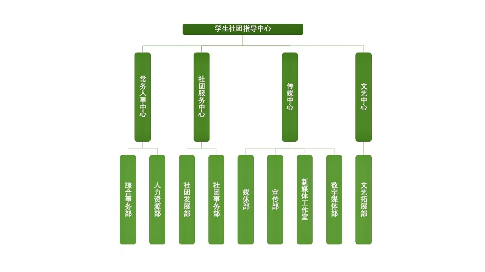
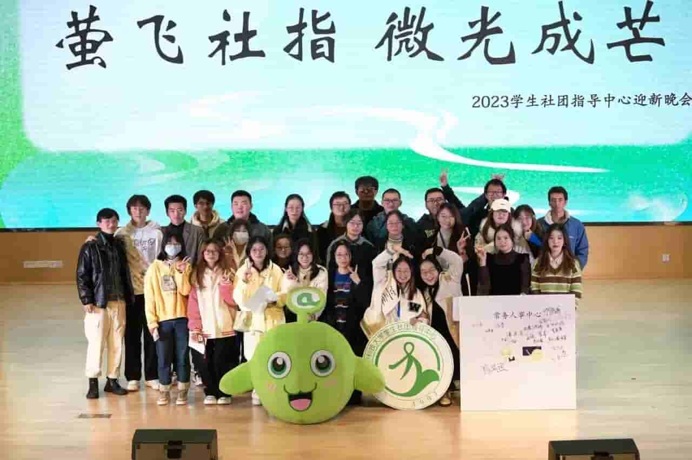
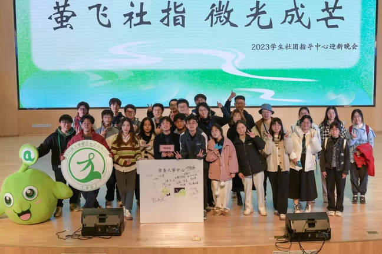

OUR DEPARTMENTS
部门介绍
华中大社指由四大中心以及直属于中心负责人团队的一个部门构成，四大中心下设九个部门。每个部门分工明确，各司其职，保证社指组织稳定有序地运行。


综合事务部
综合事务部是社指里兼具 “外联力” 与 “内驱力” 的重要存在。
对外，我们承担着社指与其他高校的联络交流工作，搭建起校际沟通的桥梁，让社指的声音能与更多高校呼应。
对内，我们的活儿也不少：要为部门内部的聚餐、娱乐敲定合适场所，让大家在忙碌之余能好好欢聚；负责社指的财务工作，把每一笔收支都打理得清清楚楚；打理 611 办公室和仓库，让日常运转井井有条；还得承担部长会议资料准备和年鉴编纂的任务，为社指的规范运行添砖加瓦。
此外，部门下设财务组、常务组、外事组和部长助理组。每组都有组长统筹，23 级部员协助，且会有 1-2 位学长学姐一对一带领 24 级新部员熟悉工作。无论是想提升沟通能力，还是想在学生工作中锤炼责任心与耐心，这里都有适合你的空间。
如果你想在实践中成长，快来加入我们吧，一起为社指的发展助力！

人力资源部
人力资源部主要负责社指招新、活动筹备、考核评优、组织培训等工作，并协调各个部门之间的工作。
部门招新时，我们统筹全社指的招新流程推进，协调各部门的工作以保证招新顺利进行；到每学期末，我们负责绩效考核，让每个成员的每点付出都被看到；而在百团大战、系列活动周等活动中，我们参与路演宣传、现场组织等各流程工作......除此之外，我们的日常工作还有学期注册、通讯录制作等。
人力资源部秉承着"先做朋友，再做同事"的宗旨，是一个充满友爱的大家庭。在这里，想出去玩永远不缺搭子；在这里，有烦恼压力，我们是你永远的树洞；在这里，我们是同事也是朋友更是家人。